For the embedded programming of this module, we will be using the arduino software for programming of the components. However, the eletrical components of this is also important since we will need it to make the physical product work. We are given a kit that includes
- A arduino board(not the genuine one)
- A breadboard
- A ultrasound sensor
- A bunch of male to male cables
- A few LED lights
- A few resistors
- Other stuff i cant remember
On top of this, we are also encouraged to use the software thinkercad, which can be found online to test the circuits that we have built, and in case there might be some problems with the circuit, none of the physical components will be blown or damaged. A nice trick i guess that will definiety come in very useful in the future where there will be alot more componenets connected at a time. You can connect the group port on the arduino to this ground 'line' on the breadboard. This allows all the ports along the ground line to become ground. Simiarly, there is another 'line' of ports that work for power, so u can connect your 5v or 3.33v output along that line, and it will make all the holes along that 'line' into a power output port, making it that 5 or 3.33 volts will be coming out. On top of that, the placement of where you put your pins from your connection is very important.
Picture of a bread from the front and back
The important thing when doing the wiring is basically every pin has to be on a new piece of metal(from the back) or a new row(from the front). This is a MUST for all the pins, even if they were to be from the same component. For lEDs, the longer pin would be the positive pin while the shorter one would be negative.
Simple blinking
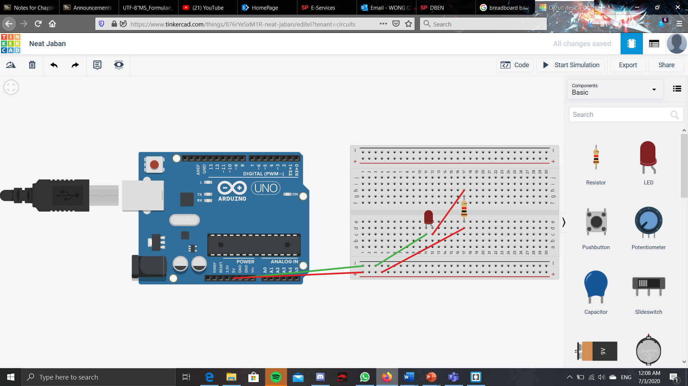This a simple design that invovles just the lighting of a LED using the power from an arduino when it is plugged in, the breadboard as a way to connect everything together and the resistor to preven the fuse. This did not include any programming, so there was not any fancy tricks done by the LED light.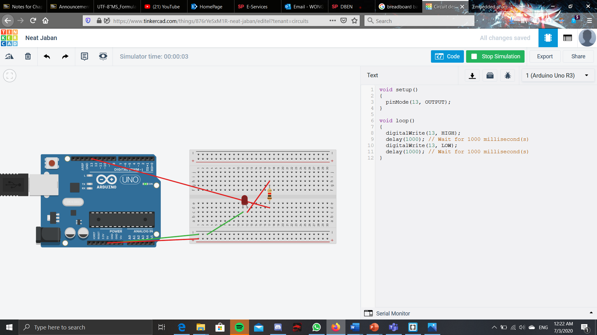
Using the deafault code given by thinkercad, it enables to the LED light to start blinking. However, a small tweak from the first design had to be changed. As we had defined pinmode 13 as the output of power, that means we had to plug in the LED lights to the port 13 on the arduino board. This is beacause we had programmed for the way the power would come out from port 13, so plugging the LED to any other ports would not have the same programming. Now onto the program. THis is a simple blinking effect given by thinkercad. It sets pinmode 13 as the output under the void setup. This is basically where you declare which pinmode would be the output and which port would be a input. Next to the void loop. This is usually where the main program would be written, and since it is a loop, the program would be looping, doin the same action until either we turn off the power, or reset the arduino. Another way to bypass this is to put a command in the program that tells the arduino to stop or maybe just end the code there. The first line is digitalWrite(13, HIGH); This basically means that for port 13, send the current thorugh. DigitalWrite is used as it was an output, 'outputting' power to the port. However, if it was to read an input, for example an IR sensor, then at first 13 would need to be declared as a input, then when writing in the void loop, it would be digitalRead instead of digitalWrite. The next line is delay(1000);. This basically tells the arduino to wait 1000ms or 1s. In effect, this just shows as the LED light lighting up for 1s. The next line is digitalWrite(13, LOW); This is just like the first line, but now instead of output power, the low just tells the arduino NOT to give power. This then shows up as the lED not lighting up. Next would be delay(1000) This is just like the first time, so it shows up as the LED light not lighting up for 1s. The code then repeats as it reaches the end of the codes in the void loop. THis results in a blinking effect, where the LED lights up for 1s then turns off for 1s and then repeating this.
3 LEDs
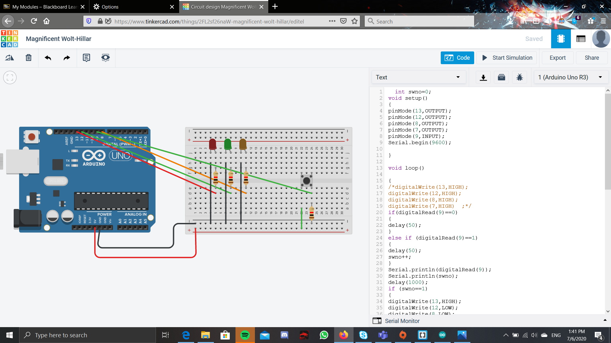This is the assignment given where you had a switch and 3 LEDs. the first click would make the 1st led light up, the second click makes the 2nd led light up, the 3rd click makes the 3rd led light up, the 4th click makes all the led lights up and the 5th click makes all the led not light up. To do this, connected the LEDS to port 13,12 and 8 while the switch is connected port 9. For the programming, i set a variable, swno as an integer and put it as 0. At the start, i started with an if else statement. The if else statement checks if the button is pressed. If it is pressed, then the int swno would stay the same and delay(50) was included to deal with the button bounce. However, of the button is pressed, then the value of swno was increased by 1. After this if else statement, is a another if else statement but instead uses a bunch of if and else if instead. This bunch of else if checks the value of swno. If its 1, then only the 1st LED would light up. If swno was 2, then the 2nd led would light up. If it was 3, then the 3rd led would light up. Then if swno was 4, all the LED would light up. If lastly, if swno was 5, then all of the LED would be turned off, as well as restting the swno 5 to 0.
Photoresistor
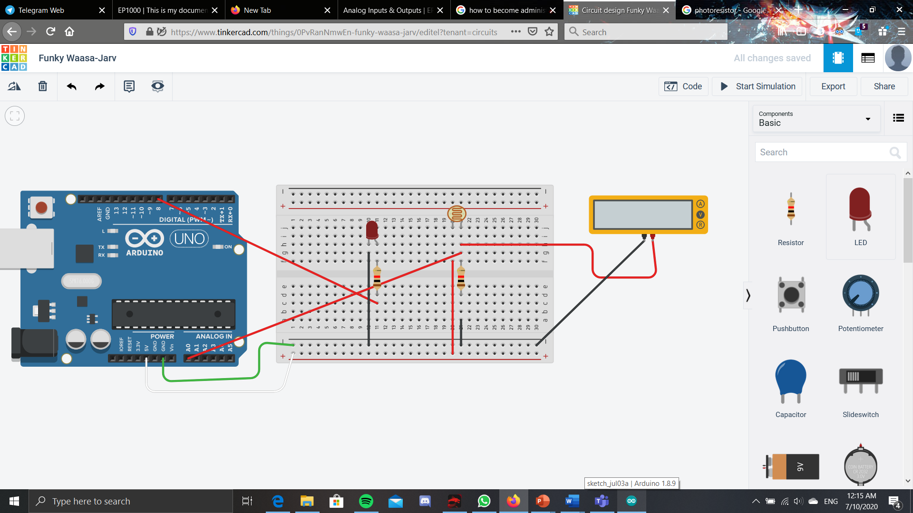This is a simple build that is where the brightness of the room, or the amount of the light of the room dictates the brightness of the LED. The brightness of the room and the LED is directly proportional is how i programmed this. First, i created an integer that called i. This will be the value of the brightness of the room that is recorded by the photoresistor. Then to use the phtoresistor to record, i would require a analogRead instead of a digitalRead. This is because a photoresitor is only able to read analog signals, which is the brightness of the room. Then, when wanting to output the LED but at different brighnesses, it would require a analogWrite instead of a digitalWrite. This is bacause a digitalWrite can only output HIGH and LOW, which is just the highest brightness of the LED and no light at all respectively. Therefore, in order to have the lED display at many levels of brightness, analogWrite is needed. I assigned i to the value that the photoresistor reads, by using i=analogRead(A0);. Then to transfer that value to the amount of the brightness for the LED, i use analogWrite(8,i). The 8 is because the LEd was connected to the port 8 and the i is the brightness i want of the LED light.
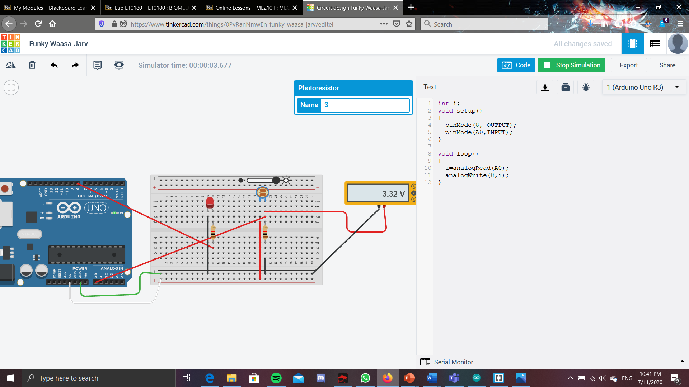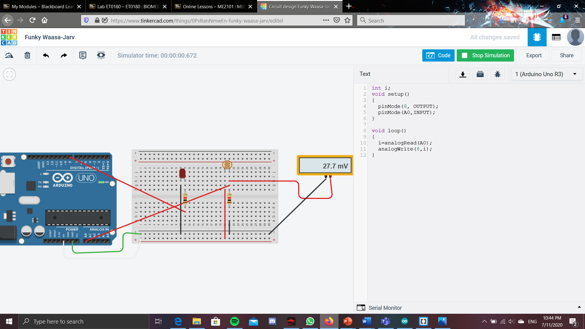
In addition to this, a multimeter is also used to see the current that is flowing throught the circuit when the circuit is runnning. However, as we are using a photoresistor, the current that flows through the circuit depends on the brightness of the room. As seen from the picture, the brighter the room, the higher the amount of current will flow through the circuit.
Ultrasonic sensor
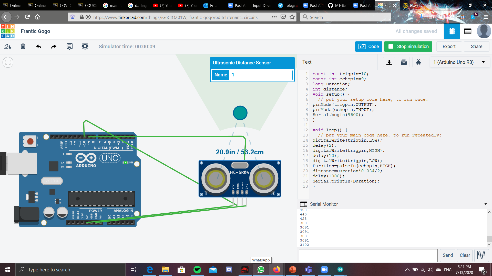
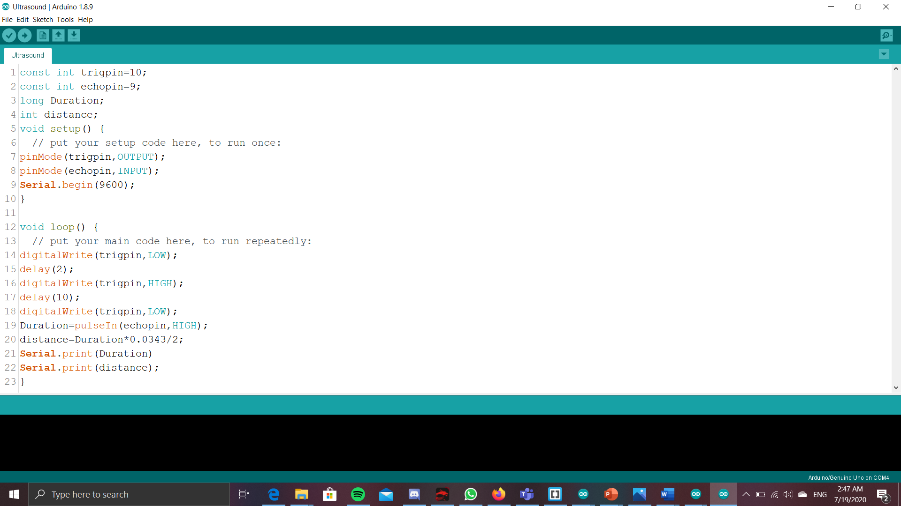
This is a simple circuit that uses a ultrasonic sensor to decide the distance of an object from the ultrasonic sensor. For this, i set the trig pin to port 10 and as an OUTPUT and the echopin to port 9 and as a INPUT. This will actually not read the distance but instead the time it takes for the signal to return back to the sensor. Therefore, from this, we have to deduce the distance for our self, by dividing the duration read with the speed of time, and then another 2 as the distance is twice of the actual distance. This is because by dividing the duration with the speed of sound, it gives the distance to and back from the object.
DHT sensor
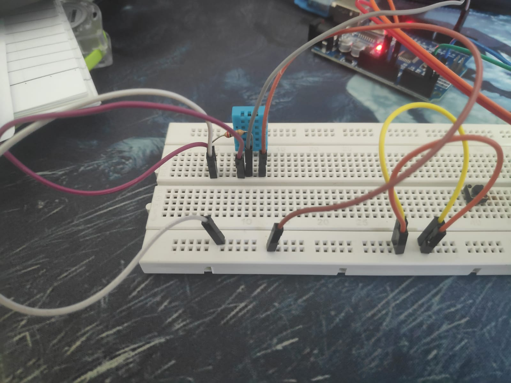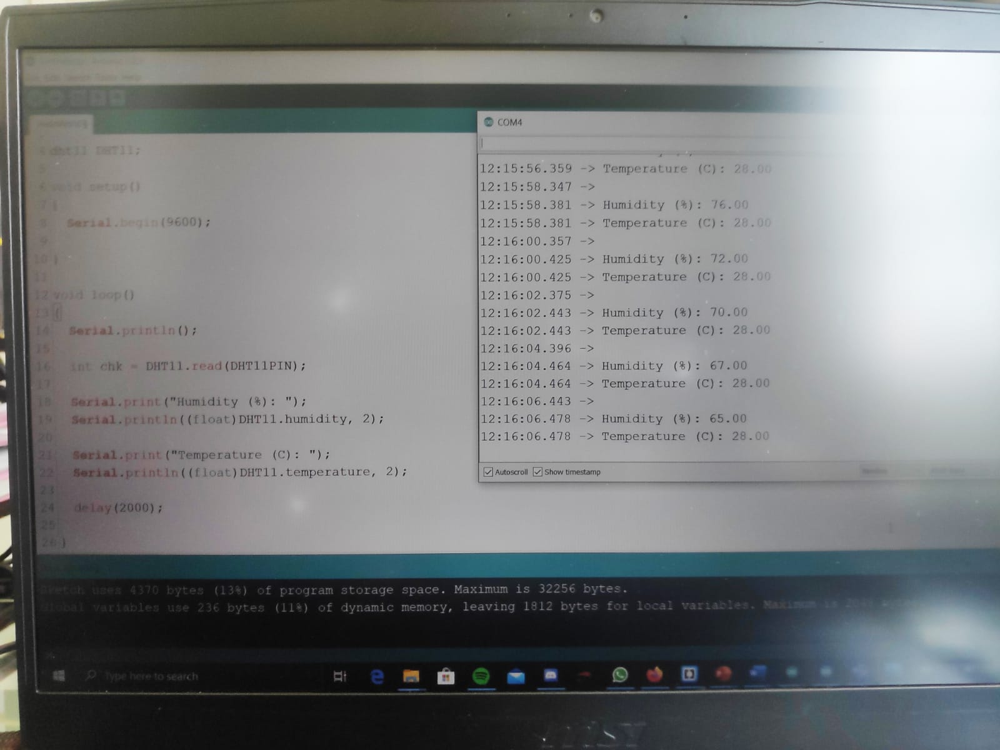
For the DHT sensor, it is a module that can take the readings of the humidity and the temperature in the surronding. 4 pins are present on the DHT sensor, however, only 3 pins are required to operate the DHT sensor to obtain the humidity and the temperature. From the left, the first pin is used for to supply the power. The second pin is used to read the humidity and the temperature. The third pin is no needed to be plugged in as it is not needed for the readings of the temperature and humidity. The last pin is used for the ground. For the arduino code, port 4 of the arduino was used to wire up the second pin of the DHT sensor. The code used can be found on this site: https://create.arduino.cc/projecthub/arcaegecengiz/using-dht11-b0f365. The site also shows how to wire up the DHT sensor when wanting to read the humidity and the temperature.
LCD Display
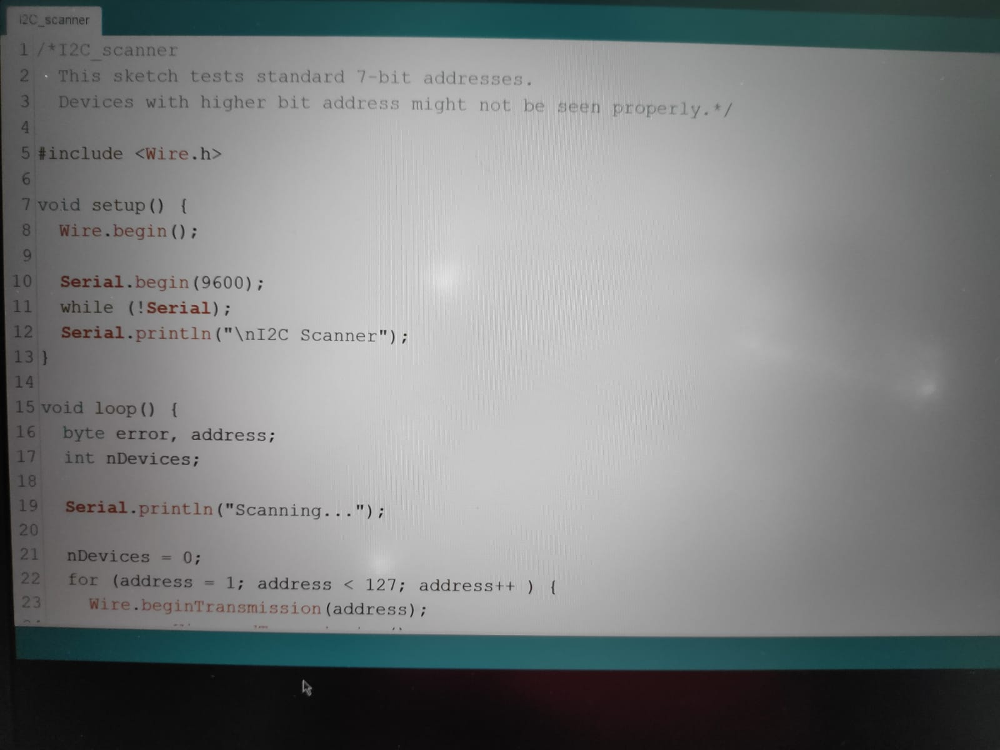
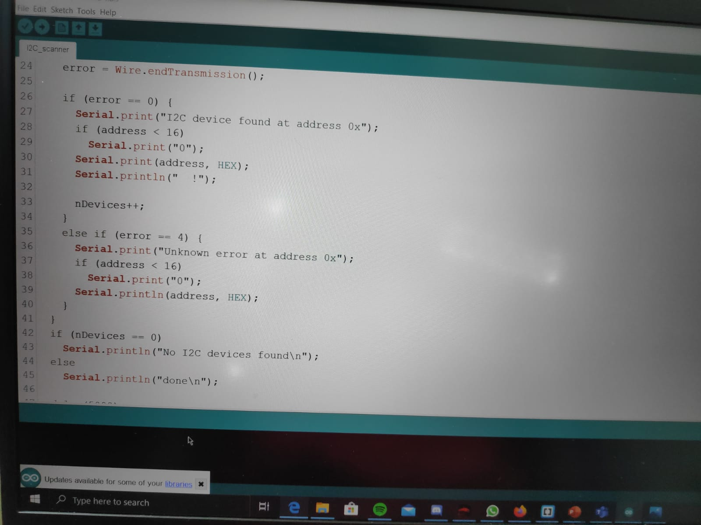 For the LCD screen, we are using a 2 by 16 LCD screen, meaning there are 2 rows and 16 columns on the screen itself. However, because this is programming, the first row and column is regarded as 0 instead of 1. This will be important when doing the programming for the LCD screen. However, before we can start using programming for the LCD display, we first need to know what is the model of the LCD. To know what the LCD model is, the program above is used to find the model of the LCD.
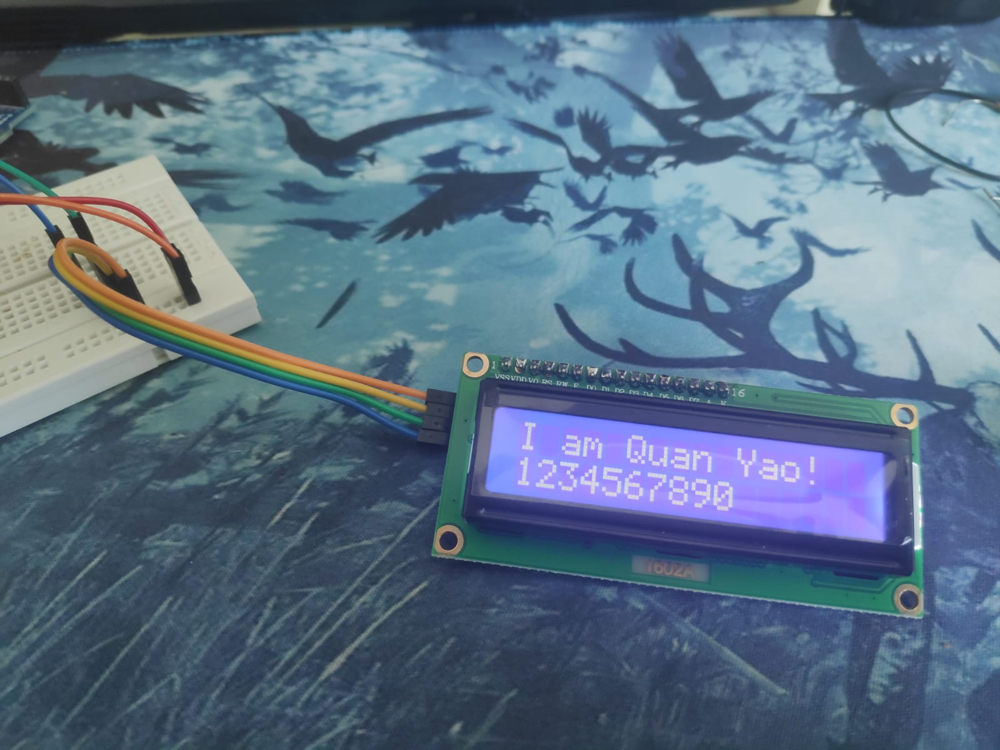
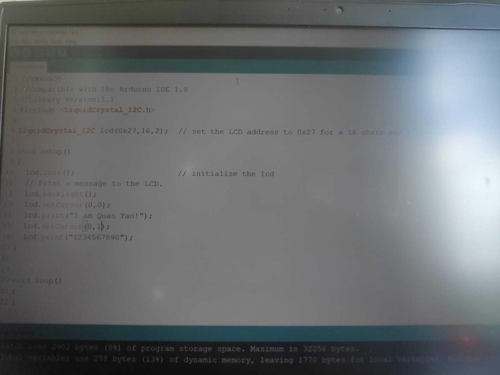
Now that we know what model the LCD, we can start using the LCD. A normal LCD has alot more ports on the module itself that requires to be wired up. However, for this module, the LCD panel a device that helps to soulder everything together, and would only need the ground and the power to be plugged in, as well as 1 for the SDA and SCL and thats all. For this program, it is very simple, It just shows "I am Quan Yao(my name)" at the top row, and then at the bottom just counts from 1-9 at the bottom row. First we need define what model of LCD display we are using, so for this case, we are using 0x27. After that on the same line of code, we also need to define how many rows and column we have, so for this display, we have 2 by 16 display. As we just want the display to show a static image, and does not require it to change the values on the display, typing out the code on the void setup is enough. So for the code, the first line would be LCD.init. This initializes the LCD display so this is very important. The next line lcd.backlight() is to turn on the backlight of the LCD. Now comes the most important part, where and what you want to show on the screen. So first, lcd.setCursor is used to set where you want the cursor to be at when it start printing. This just basically at which row and which column you want a message to printed. Now, If you want to use the first row or the first column, it is not set as 1,1, but however 0,0. And therefore, the last cell of a 2x16 display is set as 15,1. The first value would be the column and the second would be row. As to what to print for on the display, lcd.print("message")is used to print out the message you want ot print. After uploading the code to the arduino, you might notice a little problem, where the LCD does seem on, but nothing seems to be outputting. This is because if you flip the LCD around, you can see this small circle with a screw hole. This is a potentiometer that controls the brightness of the display. You will be able to see light on the display but not the characters as the brightness is cranked all the way up. To turn down the brightness, just not fully unscrew but unscrew the potentiometer until the characters can be seen. Information on how to wire up the LCD and program it can be found on https://www.makerguides.com/character-i2c-lcd-arduino-tutorial/
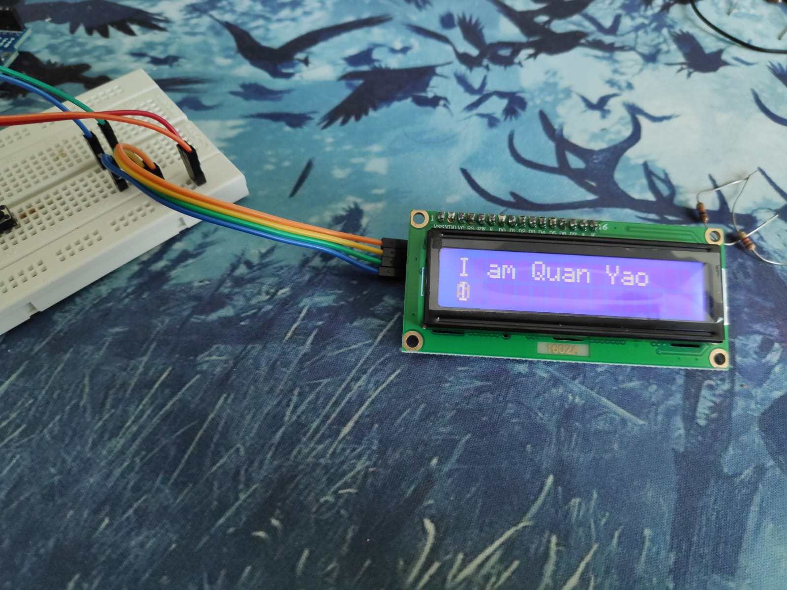
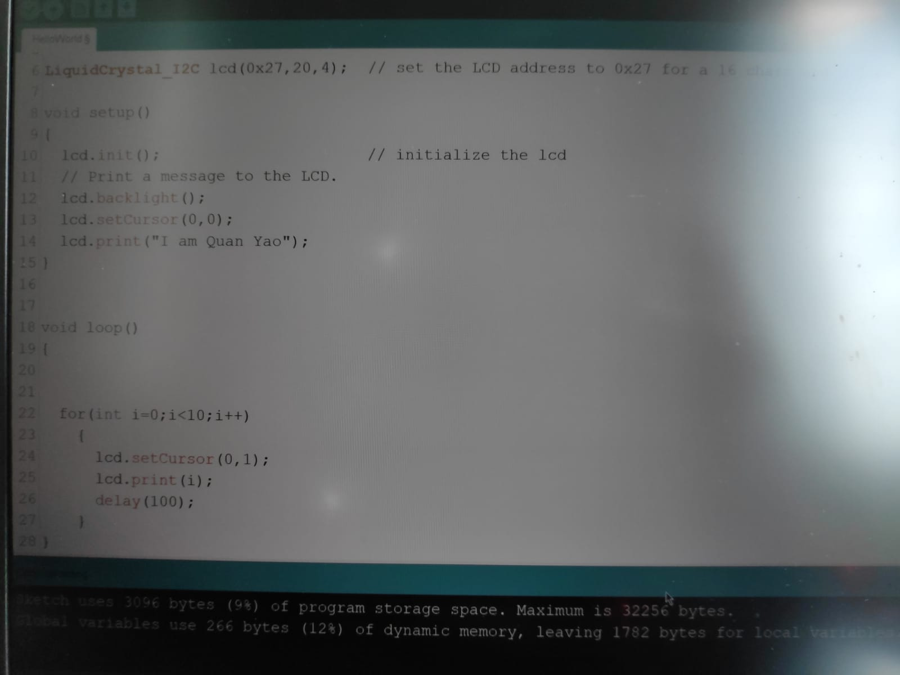
This is also using the LCD panel and the code is very similar to the first, just that instead of counting the numbers from the left to the right, the numbers will count from 1-9 but always be printed on the same place, so every 100ms, the number will count up by 1. The name will still be printed at the same place, so we do not need to change that part. For this, we first take out the part that print the numbers, which are the lines of code under the code that prints the name. Next, we have to type out the in the void loop, as once it finishes counting from the 1 to 9, it will loop back to 1. So for this code, we used a for loop, setting integer i as 0, and as long as the value of i is below 10, it will print the value of i, then add 1 to the value of i. Then once the value of i is printed, it will pause for 100ms and then go again. It is also important that in the for loop, lcd.setCursor is used, as this will set the number to always be printed at the same spot.This will create the affect of counting the number from 1-9, all at the same spot.
Servo
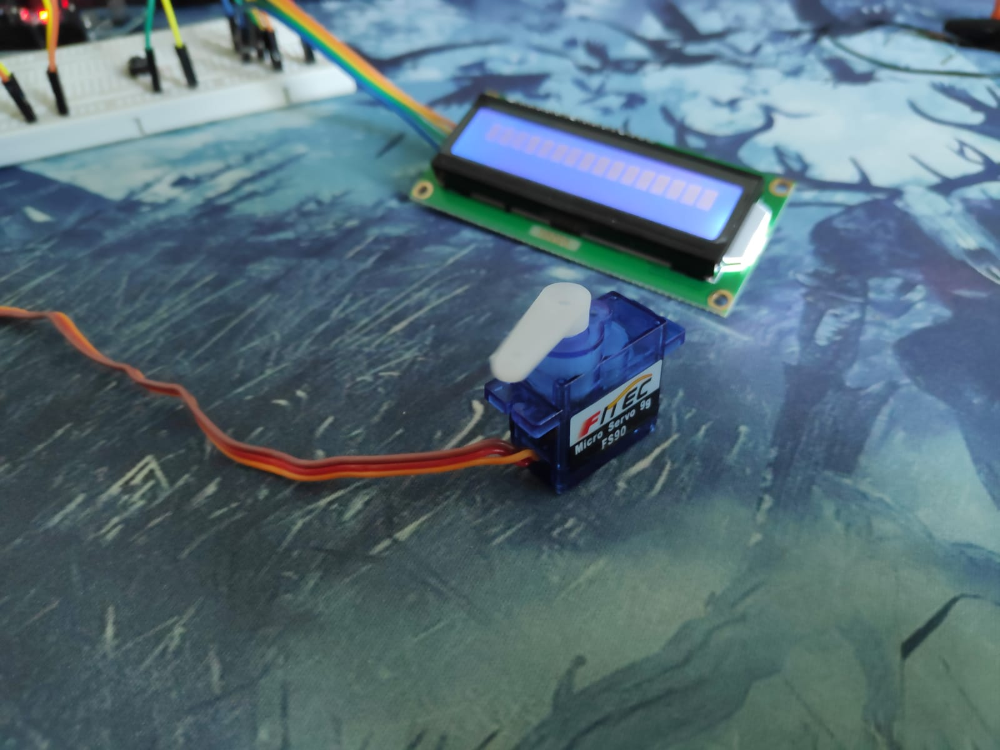
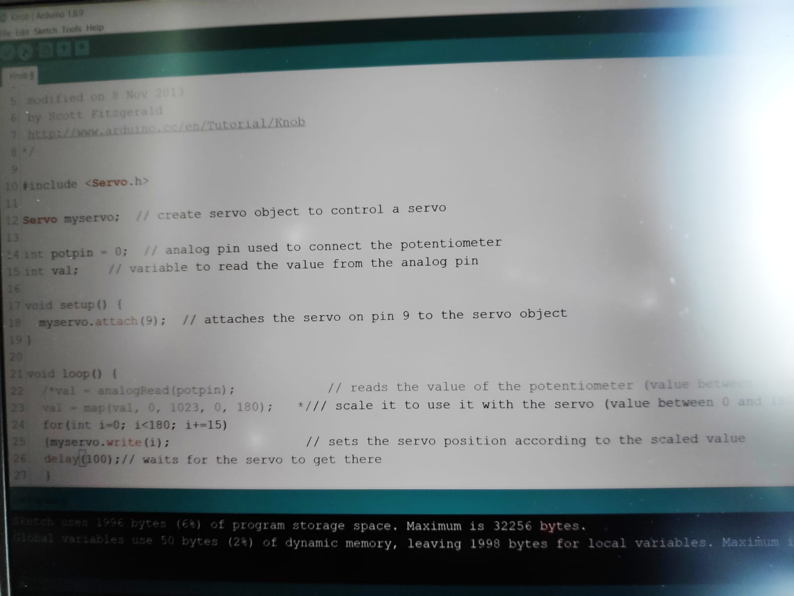
For the servo, it has 3 pins. 1 for the power and 1 for the ground and one for the control pin. For wiring that is about it. For the program of this, i used a simple program that will allows the servo to move from 0 degrees, then to 180 degrees, all in intervals of 15 degrees, and once it hits 180 degrees, it will reset back to 0 degrees and redo the entire thing. So for this, i used a for loop. I set the integer i as 0 first, then as long as i is not more then 180, will will run the code in the loop. Then at the end, it will add 15 to the value of i. For the code inside the for loop, it just sets the servo to move to that degrees, and then wait for 100ms before moving again. This is to ensure that the servo has enough time to reach the amount of degrees, before having to move again. Information as to how to wire up the servo as well as how to program it can be found at https://lastminuteengineers.com/servo-motor-arduino-tutorial/
Millis() timing
This is something that mr chew taught after the lessons, and when i was working on my project. This was a more effective and effecient way of getting the timings, and making the program do action after a certain amount of time. This was alot more effective and useful instead of using the delay function, as during a delay, the arduino actually 'goes to sleep in a way', where other commands and code will not work during this delay timing, and will only happen after the delay. millis() basically means that it takes the timing at where the millis() code is. This is going to be important as will be using this quite alot for the final code.
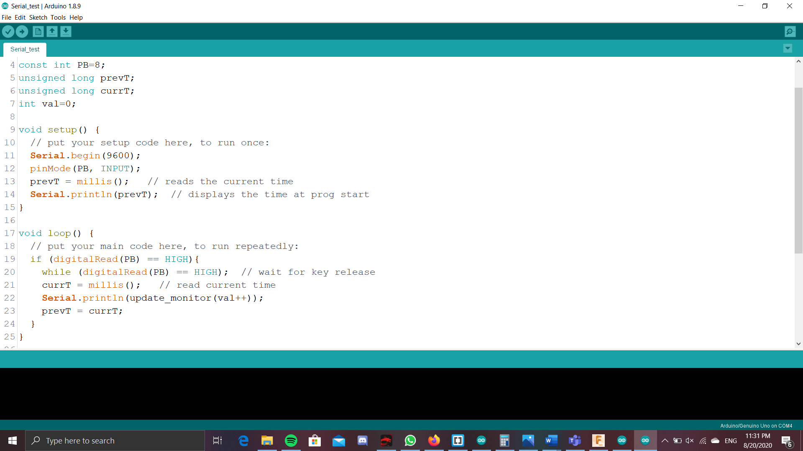
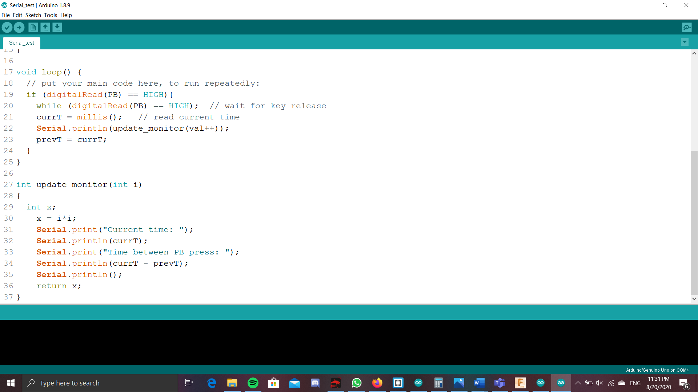